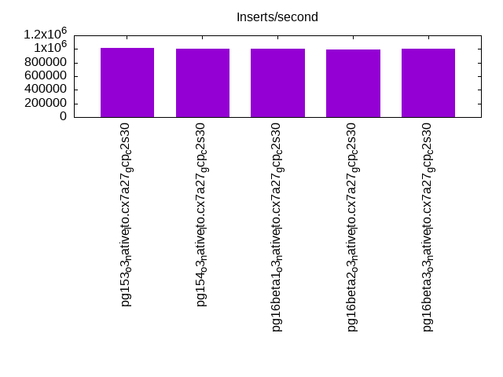
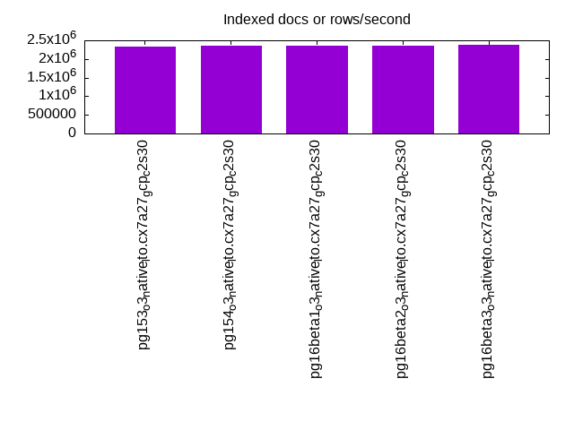
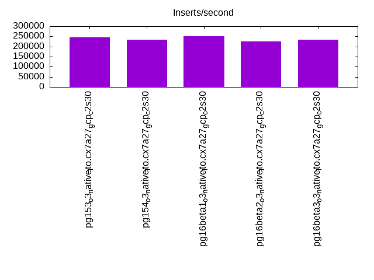
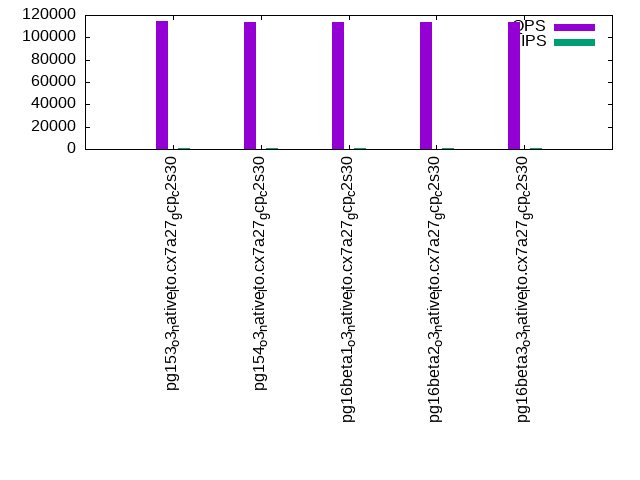
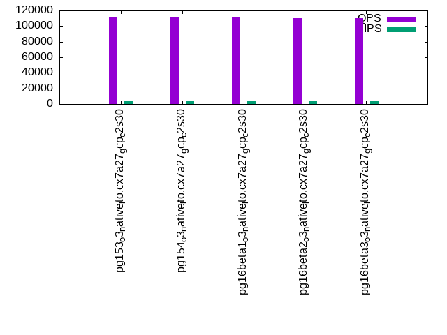
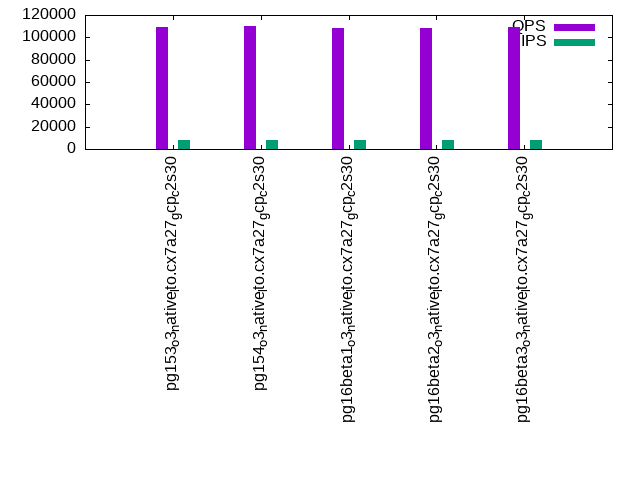

This is a report for the insert benchmark with 160M docs and 8 client(s). It is generated by scripts (bash, awk, sed) and Tufte might not be impressed. An overview of the insert benchmark is here and a short update is here. Below, by DBMS, I mean DBMS+version.config. An example is my8020.c10b40 where my means MySQL, 8020 is version 8.0.20 and c10b40 is the name for the configuration file.
The test server is a c2-standard-30 with 15 cores, hyperthreads disabled, 120G RAM and XFS with SW RAID 0 across 4 NVMe SSD. The benchmark was run with 8 clients and there were 1 or 3 connections per client (1 for queries or inserts without rate limits, 1+1 for rate limited inserts+deletes). It uses 8 tables, 1 per client. It loads 20M rows per table without secondary indexes, creates secondary indexes, then inserts 200M rows per table with a delete per insert to avoid growing the table. It then does 3 read+write tests for 3600s each that do queries as fast as possible with 100, 500 and then 1000 inserts/second/client concurrent with the queries. There are also deletes to match the inserts and avoid growing the table. The database is cached by Postgres. Clients and the DBMS share one server. The per-database configs are in the per-database subdirectories here.
The tested DBMS are:
The numbers are inserts/s for l.i0 and l.i1, indexed docs (or rows) /s for l.x and queries/s for q*.2. The values are the average rate over the entire test for inserts (IPS) and queries (QPS). The range of values for IPS and QPS is split into 3 parts: bottom 25%, middle 50%, top 25%. Values in the bottom 25% have a red background, values in the top 25% have a green background and values in the middle have no color. A gray background is used for values that can be ignored because the DBMS did not sustain the target insert rate. Red backgrounds are not used when the minimum value is within 80% of the max value.
| dbms | l.i0 | l.x | l.i1 | q100.1 | q500.1 | q1000.1 |
|---|---|---|---|---|---|---|
| pg153_o3_native_lto.cx7a27_gcp_c2s30 | 1012658 | 2320290 | 244200 | 114462 | 111191 | 109159 |
| pg154_o3_native_lto.cx7a27_gcp_c2s30 | 1006289 | 2354412 | 232660 | 114165 | 110971 | 109719 |
| pg16beta1_o3_native_lto.cx7a27_gcp_c2s30 | 1000000 | 2354412 | 250078 | 113747 | 111179 | 108648 |
| pg16beta2_o3_native_lto.cx7a27_gcp_c2s30 | 987654 | 2354412 | 226244 | 113646 | 110352 | 108196 |
| pg16beta3_o3_native_lto.cx7a27_gcp_c2s30 | 1000000 | 2389552 | 233816 | 113309 | 109984 | 109044 |
This table has relative throughput, throughput for the DBMS relative to the DBMS in the first line, using the absolute throughput from the previous table. Values less than 0.95 have a yellow background. Values greater than 1.05 have a blue background.
| dbms | l.i0 | l.x | l.i1 | q100.1 | q500.1 | q1000.1 |
|---|---|---|---|---|---|---|
| pg153_o3_native_lto.cx7a27_gcp_c2s30 | 1.00 | 1.00 | 1.00 | 1.00 | 1.00 | 1.00 |
| pg154_o3_native_lto.cx7a27_gcp_c2s30 | 0.99 | 1.01 | 0.95 | 1.00 | 1.00 | 1.01 |
| pg16beta1_o3_native_lto.cx7a27_gcp_c2s30 | 0.99 | 1.01 | 1.02 | 0.99 | 1.00 | 1.00 |
| pg16beta2_o3_native_lto.cx7a27_gcp_c2s30 | 0.98 | 1.01 | 0.93 | 0.99 | 0.99 | 0.99 |
| pg16beta3_o3_native_lto.cx7a27_gcp_c2s30 | 0.99 | 1.03 | 0.96 | 0.99 | 0.99 | 1.00 |
This lists the average rate of inserts/s for the tests that do inserts concurrent with queries. For such tests the query rate is listed in the table above. The read+write tests are setup so that the insert rate should match the target rate every second. Cells that are not at least 95% of the target have a red background to indicate a failure to satisfy the target.
| dbms | q100.1 | q500.1 | q1000.1 |
|---|---|---|---|
| pg153_o3_native_lto.cx7a27_gcp_c2s30 | 798 | 3987 | 7978 |
| pg154_o3_native_lto.cx7a27_gcp_c2s30 | 798 | 3987 | 7978 |
| pg16beta1_o3_native_lto.cx7a27_gcp_c2s30 | 797 | 3987 | 7976 |
| pg16beta2_o3_native_lto.cx7a27_gcp_c2s30 | 797 | 3987 | 7978 |
| pg16beta3_o3_native_lto.cx7a27_gcp_c2s30 | 797 | 3987 | 7978 |
| target | 800 | 4000 | 8000 |
l.i0: load without secondary indexes. Graphs for performance per 1-second interval are here.
Average throughput:
Insert response time histogram: each cell has the percentage of responses that take <= the time in the header and max is the max response time in seconds. For the max column values in the top 25% of the range have a red background and in the bottom 25% of the range have a green background. The red background is not used when the min value is within 80% of the max value.
| dbms | 256us | 1ms | 4ms | 16ms | 64ms | 256ms | 1s | 4s | 16s | gt | max |
|---|---|---|---|---|---|---|---|---|---|---|---|
| pg153_o3_native_lto.cx7a27_gcp_c2s30 | 97.978 | 1.962 | 0.050 | 0.001 | 0.007 | 0.003 | 0.292 | ||||
| pg154_o3_native_lto.cx7a27_gcp_c2s30 | 98.048 | 1.897 | 0.044 | 0.001 | 0.008 | 0.002 | 0.351 | ||||
| pg16beta1_o3_native_lto.cx7a27_gcp_c2s30 | 98.075 | 1.868 | 0.046 | 0.002 | 0.006 | 0.003 | 0.368 | ||||
| pg16beta2_o3_native_lto.cx7a27_gcp_c2s30 | 97.391 | 2.557 | 0.042 | 0.001 | 0.007 | 0.003 | 0.308 | ||||
| pg16beta3_o3_native_lto.cx7a27_gcp_c2s30 | 98.107 | 1.840 | 0.043 | 0.001 | 0.008 | 0.003 | 0.337 |
Performance metrics for the DBMS listed above. Some are normalized by throughput, others are not. Legend for results is here.
ips qps rps rmbps wps wmbps rpq rkbpq wpi wkbpi csps cpups cspq cpupq dbgb1 dbgb2 rss maxop p50 p99 tag 1012658 0 0 0.0 997.0 332.9 0.000 0.000 0.001 0.337 85486 77.6 0.084 11 15.3 41.4 5.4 0.292 143445 43268 160m.pg153_o3_native_lto.cx7a27_gcp_c2s30 1006289 0 0 0.0 996.7 335.4 0.000 0.000 0.001 0.341 85371 77.7 0.085 12 15.3 41.4 1.7 0.351 143544 47947 160m.pg154_o3_native_lto.cx7a27_gcp_c2s30 1000000 0 0 0.0 973.0 328.5 0.000 0.000 0.001 0.336 83207 76.4 0.083 11 15.3 41.4 1.7 0.368 142992 53142 160m.pg16beta1_o3_native_lto.cx7a27_gcp_c2s30 987654 0 0 0.0 970.0 325.6 0.000 0.000 0.001 0.338 84170 76.3 0.085 12 15.3 41.4 1.7 0.308 140748 51743 160m.pg16beta2_o3_native_lto.cx7a27_gcp_c2s30 1000000 0 0 0.0 993.2 332.7 0.000 0.000 0.001 0.341 84247 77.6 0.084 12 15.3 41.4 4.5 0.337 142893 47548 160m.pg16beta3_o3_native_lto.cx7a27_gcp_c2s30
l.x: create secondary indexes.
Average throughput:
Performance metrics for the DBMS listed above. Some are normalized by throughput, others are not. Legend for results is here.
ips qps rps rmbps wps wmbps rpq rkbpq wpi wkbpi csps cpups cspq cpupq dbgb1 dbgb2 rss maxop p50 p99 tag 2320290 0 0 0.0 893.6 403.2 0.000 0.000 0.000 0.178 8089 41.7 0.003 3 29.4 63.3 13.2 0.002 NA NA 160m.pg153_o3_native_lto.cx7a27_gcp_c2s30 2354412 0 0 0.0 901.0 405.2 0.000 0.000 0.000 0.176 8467 41.3 0.004 3 29.4 63.3 13.2 0.002 NA NA 160m.pg154_o3_native_lto.cx7a27_gcp_c2s30 2354412 0 0 0.0 939.4 415.0 0.000 0.000 0.000 0.180 8828 41.0 0.004 3 29.4 63.4 13.1 0.002 NA NA 160m.pg16beta1_o3_native_lto.cx7a27_gcp_c2s30 2354412 0 0 0.0 949.2 420.9 0.000 0.000 0.000 0.183 8575 40.9 0.004 3 29.4 63.4 13.1 0.002 NA NA 160m.pg16beta2_o3_native_lto.cx7a27_gcp_c2s30 2389552 0 0 0.0 946.8 419.7 0.000 0.000 0.000 0.180 9041 41.0 0.004 3 29.4 63.4 13.2 0.002 NA NA 160m.pg16beta3_o3_native_lto.cx7a27_gcp_c2s30
l.i1: continue load after secondary indexes created. Graphs for performance per 1-second interval are here.
Average throughput:
Insert response time histogram: each cell has the percentage of responses that take <= the time in the header and max is the max response time in seconds. For the max column values in the top 25% of the range have a red background and in the bottom 25% of the range have a green background. The red background is not used when the min value is within 80% of the max value.
| dbms | 256us | 1ms | 4ms | 16ms | 64ms | 256ms | 1s | 4s | 16s | gt | max |
|---|---|---|---|---|---|---|---|---|---|---|---|
| pg153_o3_native_lto.cx7a27_gcp_c2s30 | 0.045 | 99.733 | 0.160 | 0.059 | 0.004 | 0.167 | |||||
| pg154_o3_native_lto.cx7a27_gcp_c2s30 | 0.088 | 99.694 | 0.163 | 0.052 | 0.003 | nonzero | 0.274 | ||||
| pg16beta1_o3_native_lto.cx7a27_gcp_c2s30 | 0.197 | 99.577 | 0.158 | 0.064 | 0.004 | 0.226 | |||||
| pg16beta2_o3_native_lto.cx7a27_gcp_c2s30 | 0.278 | 99.473 | 0.188 | 0.057 | 0.003 | 0.176 | |||||
| pg16beta3_o3_native_lto.cx7a27_gcp_c2s30 | 0.184 | 99.591 | 0.166 | 0.056 | 0.003 | 0.173 |
Delete response time histogram: each cell has the percentage of responses that take <= the time in the header and max is the max response time in seconds. For the max column values in the top 25% of the range have a red background and in the bottom 25% of the range have a green background. The red background is not used when the min value is within 80% of the max value.
| dbms | 256us | 1ms | 4ms | 16ms | 64ms | 256ms | 1s | 4s | 16s | gt | max |
|---|---|---|---|---|---|---|---|---|---|---|---|
| pg153_o3_native_lto.cx7a27_gcp_c2s30 | 78.542 | 8.042 | 11.369 | 2.028 | 0.018 | 0.002 | 0.173 | ||||
| pg154_o3_native_lto.cx7a27_gcp_c2s30 | 78.992 | 7.287 | 10.801 | 2.898 | 0.020 | 0.002 | nonzero | 0.274 | |||
| pg16beta1_o3_native_lto.cx7a27_gcp_c2s30 | 77.240 | 8.938 | 12.293 | 1.507 | 0.019 | 0.002 | 0.223 | ||||
| pg16beta2_o3_native_lto.cx7a27_gcp_c2s30 | 77.168 | 8.367 | 11.606 | 2.839 | 0.018 | 0.002 | 0.173 | ||||
| pg16beta3_o3_native_lto.cx7a27_gcp_c2s30 | 78.391 | 7.902 | 10.889 | 2.797 | 0.020 | 0.002 | 0.167 |
Performance metrics for the DBMS listed above. Some are normalized by throughput, others are not. Legend for results is here.
ips qps rps rmbps wps wmbps rpq rkbpq wpi wkbpi csps cpups cspq cpupq dbgb1 dbgb2 rss maxop p50 p99 tag 244200 0 0 0.0 1174.9 192.3 0.000 0.000 0.005 0.807 95317 78.3 0.390 48 41.8 111.9 30.8 0.167 35584 6992 160m.pg153_o3_native_lto.cx7a27_gcp_c2s30 232660 0 0 0.0 1106.8 180.6 0.000 0.000 0.005 0.795 90417 77.4 0.389 50 41.6 111.7 7.2 0.274 35911 6293 160m.pg154_o3_native_lto.cx7a27_gcp_c2s30 250078 0 0 0.0 1181.6 196.2 0.000 0.000 0.005 0.803 97518 78.7 0.390 47 41.8 111.8 24.8 0.226 35967 7092 160m.pg16beta1_o3_native_lto.cx7a27_gcp_c2s30 226244 0 0 0.0 1088.9 175.5 0.000 0.000 0.005 0.795 91084 74.6 0.403 49 41.7 111.7 37.8 0.176 34612 6143 160m.pg16beta2_o3_native_lto.cx7a27_gcp_c2s30 233816 0 0 0.0 1102.7 181.8 0.000 0.000 0.005 0.796 91657 76.5 0.392 49 41.6 111.7 25.8 0.173 35922 4995 160m.pg16beta3_o3_native_lto.cx7a27_gcp_c2s30
q100.1: range queries with 100 insert/s per client. Graphs for performance per 1-second interval are here.
Average throughput:
Query response time histogram: each cell has the percentage of responses that take <= the time in the header and max is the max response time in seconds. For max values in the top 25% of the range have a red background and in the bottom 25% of the range have a green background. The red background is not used when the min value is within 80% of the max value.
| dbms | 256us | 1ms | 4ms | 16ms | 64ms | 256ms | 1s | 4s | 16s | gt | max |
|---|---|---|---|---|---|---|---|---|---|---|---|
| pg153_o3_native_lto.cx7a27_gcp_c2s30 | 99.996 | 0.003 | 0.001 | nonzero | 0.010 | ||||||
| pg154_o3_native_lto.cx7a27_gcp_c2s30 | 99.997 | 0.003 | 0.001 | nonzero | 0.005 | ||||||
| pg16beta1_o3_native_lto.cx7a27_gcp_c2s30 | 99.997 | 0.003 | 0.001 | nonzero | 0.009 | ||||||
| pg16beta2_o3_native_lto.cx7a27_gcp_c2s30 | 99.996 | 0.003 | 0.001 | nonzero | 0.005 | ||||||
| pg16beta3_o3_native_lto.cx7a27_gcp_c2s30 | 99.996 | 0.003 | 0.001 | nonzero | 0.005 |
Insert response time histogram: each cell has the percentage of responses that take <= the time in the header and max is the max response time in seconds. For max values in the top 25% of the range have a red background and in the bottom 25% of the range have a green background. The red background is not used when the min value is within 80% of the max value.
| dbms | 256us | 1ms | 4ms | 16ms | 64ms | 256ms | 1s | 4s | 16s | gt | max |
|---|---|---|---|---|---|---|---|---|---|---|---|
| pg153_o3_native_lto.cx7a27_gcp_c2s30 | 99.840 | 0.160 | 0.007 | ||||||||
| pg154_o3_native_lto.cx7a27_gcp_c2s30 | 99.899 | 0.101 | 0.013 | ||||||||
| pg16beta1_o3_native_lto.cx7a27_gcp_c2s30 | 99.884 | 0.116 | 0.013 | ||||||||
| pg16beta2_o3_native_lto.cx7a27_gcp_c2s30 | 99.700 | 0.300 | 0.008 | ||||||||
| pg16beta3_o3_native_lto.cx7a27_gcp_c2s30 | 99.799 | 0.201 | 0.009 |
Delete response time histogram: each cell has the percentage of responses that take <= the time in the header and max is the max response time in seconds. For max values in the top 25% of the range have a red background and in the bottom 25% of the range have a green background. The red background is not used when the min value is within 80% of the max value.
| dbms | 256us | 1ms | 4ms | 16ms | 64ms | 256ms | 1s | 4s | 16s | gt | max |
|---|---|---|---|---|---|---|---|---|---|---|---|
| pg153_o3_native_lto.cx7a27_gcp_c2s30 | 53.476 | 23.043 | 23.458 | 0.023 | 0.005 | ||||||
| pg154_o3_native_lto.cx7a27_gcp_c2s30 | 64.703 | 19.092 | 13.089 | 3.116 | 0.012 | ||||||
| pg16beta1_o3_native_lto.cx7a27_gcp_c2s30 | 55.688 | 18.927 | 24.969 | 0.417 | 0.009 | ||||||
| pg16beta2_o3_native_lto.cx7a27_gcp_c2s30 | 61.271 | 17.434 | 18.932 | 2.363 | 0.010 | ||||||
| pg16beta3_o3_native_lto.cx7a27_gcp_c2s30 | 57.260 | 21.986 | 20.689 | 0.064 | 0.012 |
Performance metrics for the DBMS listed above. Some are normalized by throughput, others are not. Legend for results is here.
ips qps rps rmbps wps wmbps rpq rkbpq wpi wkbpi csps cpups cspq cpupq dbgb1 dbgb2 rss maxop p50 p99 tag 798 114462 0 0.0 181.4 9.5 0.000 0.000 0.227 12.249 435556 52.9 3.805 69 41.8 111.9 12.4 0.010 14262 14017 160m.pg153_o3_native_lto.cx7a27_gcp_c2s30 798 114165 0 0.0 173.7 9.6 0.000 0.000 0.218 12.337 434521 52.7 3.806 69 41.5 111.6 10.4 0.005 14240 13937 160m.pg154_o3_native_lto.cx7a27_gcp_c2s30 797 113747 0 0.0 175.1 9.5 0.000 0.000 0.220 12.180 433046 52.9 3.807 70 41.8 111.8 1.6 0.009 14240 13937 160m.pg16beta1_o3_native_lto.cx7a27_gcp_c2s30 797 113646 0 0.0 195.7 10.0 0.000 0.000 0.246 12.792 432649 52.9 3.807 70 41.7 111.7 1.7 0.005 14086 13745 160m.pg16beta2_o3_native_lto.cx7a27_gcp_c2s30 797 113309 0 0.0 204.8 9.7 0.000 0.000 0.257 12.396 431321 52.8 3.807 70 41.6 111.7 7.4 0.005 14240 13974 160m.pg16beta3_o3_native_lto.cx7a27_gcp_c2s30
q500.1: range queries with 500 insert/s per client. Graphs for performance per 1-second interval are here.
Average throughput:
Query response time histogram: each cell has the percentage of responses that take <= the time in the header and max is the max response time in seconds. For max values in the top 25% of the range have a red background and in the bottom 25% of the range have a green background. The red background is not used when the min value is within 80% of the max value.
| dbms | 256us | 1ms | 4ms | 16ms | 64ms | 256ms | 1s | 4s | 16s | gt | max |
|---|---|---|---|---|---|---|---|---|---|---|---|
| pg153_o3_native_lto.cx7a27_gcp_c2s30 | 99.986 | 0.009 | 0.005 | nonzero | nonzero | nonzero | 0.068 | ||||
| pg154_o3_native_lto.cx7a27_gcp_c2s30 | 99.986 | 0.009 | 0.005 | nonzero | nonzero | nonzero | 0.070 | ||||
| pg16beta1_o3_native_lto.cx7a27_gcp_c2s30 | 99.985 | 0.010 | 0.005 | nonzero | nonzero | 0.018 | |||||
| pg16beta2_o3_native_lto.cx7a27_gcp_c2s30 | 99.986 | 0.009 | 0.005 | nonzero | 0.015 | ||||||
| pg16beta3_o3_native_lto.cx7a27_gcp_c2s30 | 99.987 | 0.009 | 0.005 | nonzero | nonzero | 0.018 |
Insert response time histogram: each cell has the percentage of responses that take <= the time in the header and max is the max response time in seconds. For max values in the top 25% of the range have a red background and in the bottom 25% of the range have a green background. The red background is not used when the min value is within 80% of the max value.
| dbms | 256us | 1ms | 4ms | 16ms | 64ms | 256ms | 1s | 4s | 16s | gt | max |
|---|---|---|---|---|---|---|---|---|---|---|---|
| pg153_o3_native_lto.cx7a27_gcp_c2s30 | 99.797 | 0.202 | 0.001 | 0.018 | |||||||
| pg154_o3_native_lto.cx7a27_gcp_c2s30 | 99.809 | 0.188 | 0.003 | 0.023 | |||||||
| pg16beta1_o3_native_lto.cx7a27_gcp_c2s30 | 99.661 | 0.333 | 0.006 | 0.021 | |||||||
| pg16beta2_o3_native_lto.cx7a27_gcp_c2s30 | 99.836 | 0.162 | 0.002 | 0.020 | |||||||
| pg16beta3_o3_native_lto.cx7a27_gcp_c2s30 | 99.836 | 0.163 | 0.002 | 0.019 |
Delete response time histogram: each cell has the percentage of responses that take <= the time in the header and max is the max response time in seconds. For max values in the top 25% of the range have a red background and in the bottom 25% of the range have a green background. The red background is not used when the min value is within 80% of the max value.
| dbms | 256us | 1ms | 4ms | 16ms | 64ms | 256ms | 1s | 4s | 16s | gt | max |
|---|---|---|---|---|---|---|---|---|---|---|---|
| pg153_o3_native_lto.cx7a27_gcp_c2s30 | 77.939 | 10.264 | 7.256 | 4.541 | 0.001 | 0.019 | |||||
| pg154_o3_native_lto.cx7a27_gcp_c2s30 | 77.299 | 5.500 | 6.811 | 10.387 | 0.003 | 0.025 | |||||
| pg16beta1_o3_native_lto.cx7a27_gcp_c2s30 | 76.841 | 6.617 | 10.261 | 6.272 | 0.008 | 0.021 | |||||
| pg16beta2_o3_native_lto.cx7a27_gcp_c2s30 | 76.709 | 5.969 | 7.821 | 9.500 | 0.001 | 0.019 | |||||
| pg16beta3_o3_native_lto.cx7a27_gcp_c2s30 | 78.203 | 9.042 | 5.069 | 7.684 | 0.003 | 0.031 |
Performance metrics for the DBMS listed above. Some are normalized by throughput, others are not. Legend for results is here.
ips qps rps rmbps wps wmbps rpq rkbpq wpi wkbpi csps cpups cspq cpupq dbgb1 dbgb2 rss maxop p50 p99 tag 3987 111191 0 0.0 280.8 14.7 0.000 0.000 0.070 3.768 423484 53.8 3.809 73 41.8 106.5 13.7 0.068 13953 11747 160m.pg153_o3_native_lto.cx7a27_gcp_c2s30 3987 110971 0 0.0 277.1 14.4 0.000 0.000 0.070 3.708 422473 53.9 3.807 73 41.5 106.0 14.0 0.070 14001 11859 160m.pg154_o3_native_lto.cx7a27_gcp_c2s30 3987 111179 0 0.0 285.4 14.3 0.000 0.000 0.072 3.665 423185 53.8 3.806 73 41.8 106.3 26.8 0.018 13985 11891 160m.pg16beta1_o3_native_lto.cx7a27_gcp_c2s30 3987 110352 0 0.0 270.8 14.6 0.000 0.000 0.068 3.746 420227 54.0 3.808 73 41.7 106.1 11.5 0.015 13718 11411 160m.pg16beta2_o3_native_lto.cx7a27_gcp_c2s30 3987 109984 0 0.0 270.4 14.8 0.000 0.000 0.068 3.813 418883 53.9 3.809 74 41.6 106.0 12.8 0.018 13745 11555 160m.pg16beta3_o3_native_lto.cx7a27_gcp_c2s30
q1000.1: range queries with 1000 insert/s per client. Graphs for performance per 1-second interval are here.
Average throughput:
Query response time histogram: each cell has the percentage of responses that take <= the time in the header and max is the max response time in seconds. For max values in the top 25% of the range have a red background and in the bottom 25% of the range have a green background. The red background is not used when the min value is within 80% of the max value.
| dbms | 256us | 1ms | 4ms | 16ms | 64ms | 256ms | 1s | 4s | 16s | gt | max |
|---|---|---|---|---|---|---|---|---|---|---|---|
| pg153_o3_native_lto.cx7a27_gcp_c2s30 | 99.958 | 0.032 | 0.009 | nonzero | nonzero | nonzero | 0.091 | ||||
| pg154_o3_native_lto.cx7a27_gcp_c2s30 | 99.960 | 0.030 | 0.009 | nonzero | nonzero | 0.026 | |||||
| pg16beta1_o3_native_lto.cx7a27_gcp_c2s30 | 99.962 | 0.030 | 0.009 | nonzero | nonzero | 0.025 | |||||
| pg16beta2_o3_native_lto.cx7a27_gcp_c2s30 | 99.955 | 0.035 | 0.010 | nonzero | nonzero | 0.025 | |||||
| pg16beta3_o3_native_lto.cx7a27_gcp_c2s30 | 99.953 | 0.036 | 0.010 | nonzero | nonzero | nonzero | 0.087 |
Insert response time histogram: each cell has the percentage of responses that take <= the time in the header and max is the max response time in seconds. For max values in the top 25% of the range have a red background and in the bottom 25% of the range have a green background. The red background is not used when the min value is within 80% of the max value.
| dbms | 256us | 1ms | 4ms | 16ms | 64ms | 256ms | 1s | 4s | 16s | gt | max |
|---|---|---|---|---|---|---|---|---|---|---|---|
| pg153_o3_native_lto.cx7a27_gcp_c2s30 | 99.461 | 0.523 | 0.015 | nonzero | 0.072 | ||||||
| pg154_o3_native_lto.cx7a27_gcp_c2s30 | 99.291 | 0.684 | 0.026 | 0.035 | |||||||
| pg16beta1_o3_native_lto.cx7a27_gcp_c2s30 | 99.652 | 0.337 | 0.011 | 0.033 | |||||||
| pg16beta2_o3_native_lto.cx7a27_gcp_c2s30 | 99.397 | 0.583 | 0.020 | 0.028 | |||||||
| pg16beta3_o3_native_lto.cx7a27_gcp_c2s30 | 99.320 | 0.660 | 0.020 | nonzero | 0.080 |
Delete response time histogram: each cell has the percentage of responses that take <= the time in the header and max is the max response time in seconds. For max values in the top 25% of the range have a red background and in the bottom 25% of the range have a green background. The red background is not used when the min value is within 80% of the max value.
| dbms | 256us | 1ms | 4ms | 16ms | 64ms | 256ms | 1s | 4s | 16s | gt | max |
|---|---|---|---|---|---|---|---|---|---|---|---|
| pg153_o3_native_lto.cx7a27_gcp_c2s30 | 78.638 | 7.380 | 6.352 | 7.616 | 0.014 | nonzero | 0.070 | ||||
| pg154_o3_native_lto.cx7a27_gcp_c2s30 | 76.944 | 5.055 | 7.994 | 9.992 | 0.015 | 0.032 | |||||
| pg16beta1_o3_native_lto.cx7a27_gcp_c2s30 | 77.876 | 6.251 | 8.315 | 7.553 | 0.006 | 0.033 | |||||
| pg16beta2_o3_native_lto.cx7a27_gcp_c2s30 | 75.947 | 6.619 | 8.239 | 9.189 | 0.005 | 0.026 | |||||
| pg16beta3_o3_native_lto.cx7a27_gcp_c2s30 | 76.767 | 8.075 | 6.669 | 8.483 | 0.005 | 0.023 |
Performance metrics for the DBMS listed above. Some are normalized by throughput, others are not. Legend for results is here.
ips qps rps rmbps wps wmbps rpq rkbpq wpi wkbpi csps cpups cspq cpupq dbgb1 dbgb2 rss maxop p50 p99 tag 7978 109159 0 0.0 181.4 16.7 0.000 0.000 0.023 2.146 413001 55.0 3.783 76 41.6 99.3 24.9 0.091 13777 11811 160m.pg153_o3_native_lto.cx7a27_gcp_c2s30 7978 109719 0 0.0 178.5 16.7 0.000 0.000 0.022 2.142 414915 55.1 3.782 75 41.5 99.1 26.2 0.026 13728 11715 160m.pg154_o3_native_lto.cx7a27_gcp_c2s30 7976 108648 0 0.0 184.0 16.7 0.000 0.000 0.023 2.148 412183 55.0 3.794 76 41.8 99.4 24.4 0.025 13649 11555 160m.pg16beta1_o3_native_lto.cx7a27_gcp_c2s30 7978 108196 0 0.0 177.2 16.6 0.000 0.000 0.022 2.136 409940 55.1 3.789 76 41.7 99.2 14.0 0.025 13377 11352 160m.pg16beta2_o3_native_lto.cx7a27_gcp_c2s30 7978 109044 0 0.0 179.6 16.6 0.000 0.000 0.023 2.136 412608 55.0 3.784 76 41.6 99.0 13.7 0.087 13617 11683 160m.pg16beta3_o3_native_lto.cx7a27_gcp_c2s30
l.i0: load without secondary indexes
Performance metrics for all DBMS, not just the ones listed above. Some are normalized by throughput, others are not. Legend for results is here.
ips qps rps rmbps wps wmbps rpq rkbpq wpi wkbpi csps cpups cspq cpupq dbgb1 dbgb2 rss maxop p50 p99 tag 1012658 0 0 0.0 997.0 332.9 0.000 0.000 0.001 0.337 85486 77.6 0.084 11 15.3 41.4 5.4 0.292 143445 43268 160m.pg153_o3_native_lto.cx7a27_gcp_c2s30 1006289 0 0 0.0 996.7 335.4 0.000 0.000 0.001 0.341 85371 77.7 0.085 12 15.3 41.4 1.7 0.351 143544 47947 160m.pg154_o3_native_lto.cx7a27_gcp_c2s30 1000000 0 0 0.0 973.0 328.5 0.000 0.000 0.001 0.336 83207 76.4 0.083 11 15.3 41.4 1.7 0.368 142992 53142 160m.pg16beta1_o3_native_lto.cx7a27_gcp_c2s30 987654 0 0 0.0 970.0 325.6 0.000 0.000 0.001 0.338 84170 76.3 0.085 12 15.3 41.4 1.7 0.308 140748 51743 160m.pg16beta2_o3_native_lto.cx7a27_gcp_c2s30 1000000 0 0 0.0 993.2 332.7 0.000 0.000 0.001 0.341 84247 77.6 0.084 12 15.3 41.4 4.5 0.337 142893 47548 160m.pg16beta3_o3_native_lto.cx7a27_gcp_c2s30
l.x: create secondary indexes
Performance metrics for all DBMS, not just the ones listed above. Some are normalized by throughput, others are not. Legend for results is here.
ips qps rps rmbps wps wmbps rpq rkbpq wpi wkbpi csps cpups cspq cpupq dbgb1 dbgb2 rss maxop p50 p99 tag 2320290 0 0 0.0 893.6 403.2 0.000 0.000 0.000 0.178 8089 41.7 0.003 3 29.4 63.3 13.2 0.002 NA NA 160m.pg153_o3_native_lto.cx7a27_gcp_c2s30 2354412 0 0 0.0 901.0 405.2 0.000 0.000 0.000 0.176 8467 41.3 0.004 3 29.4 63.3 13.2 0.002 NA NA 160m.pg154_o3_native_lto.cx7a27_gcp_c2s30 2354412 0 0 0.0 939.4 415.0 0.000 0.000 0.000 0.180 8828 41.0 0.004 3 29.4 63.4 13.1 0.002 NA NA 160m.pg16beta1_o3_native_lto.cx7a27_gcp_c2s30 2354412 0 0 0.0 949.2 420.9 0.000 0.000 0.000 0.183 8575 40.9 0.004 3 29.4 63.4 13.1 0.002 NA NA 160m.pg16beta2_o3_native_lto.cx7a27_gcp_c2s30 2389552 0 0 0.0 946.8 419.7 0.000 0.000 0.000 0.180 9041 41.0 0.004 3 29.4 63.4 13.2 0.002 NA NA 160m.pg16beta3_o3_native_lto.cx7a27_gcp_c2s30
l.i1: continue load after secondary indexes created
Performance metrics for all DBMS, not just the ones listed above. Some are normalized by throughput, others are not. Legend for results is here.
ips qps rps rmbps wps wmbps rpq rkbpq wpi wkbpi csps cpups cspq cpupq dbgb1 dbgb2 rss maxop p50 p99 tag 244200 0 0 0.0 1174.9 192.3 0.000 0.000 0.005 0.807 95317 78.3 0.390 48 41.8 111.9 30.8 0.167 35584 6992 160m.pg153_o3_native_lto.cx7a27_gcp_c2s30 232660 0 0 0.0 1106.8 180.6 0.000 0.000 0.005 0.795 90417 77.4 0.389 50 41.6 111.7 7.2 0.274 35911 6293 160m.pg154_o3_native_lto.cx7a27_gcp_c2s30 250078 0 0 0.0 1181.6 196.2 0.000 0.000 0.005 0.803 97518 78.7 0.390 47 41.8 111.8 24.8 0.226 35967 7092 160m.pg16beta1_o3_native_lto.cx7a27_gcp_c2s30 226244 0 0 0.0 1088.9 175.5 0.000 0.000 0.005 0.795 91084 74.6 0.403 49 41.7 111.7 37.8 0.176 34612 6143 160m.pg16beta2_o3_native_lto.cx7a27_gcp_c2s30 233816 0 0 0.0 1102.7 181.8 0.000 0.000 0.005 0.796 91657 76.5 0.392 49 41.6 111.7 25.8 0.173 35922 4995 160m.pg16beta3_o3_native_lto.cx7a27_gcp_c2s30
q100.1: range queries with 100 insert/s per client
Performance metrics for all DBMS, not just the ones listed above. Some are normalized by throughput, others are not. Legend for results is here.
ips qps rps rmbps wps wmbps rpq rkbpq wpi wkbpi csps cpups cspq cpupq dbgb1 dbgb2 rss maxop p50 p99 tag 798 114462 0 0.0 181.4 9.5 0.000 0.000 0.227 12.249 435556 52.9 3.805 69 41.8 111.9 12.4 0.010 14262 14017 160m.pg153_o3_native_lto.cx7a27_gcp_c2s30 798 114165 0 0.0 173.7 9.6 0.000 0.000 0.218 12.337 434521 52.7 3.806 69 41.5 111.6 10.4 0.005 14240 13937 160m.pg154_o3_native_lto.cx7a27_gcp_c2s30 797 113747 0 0.0 175.1 9.5 0.000 0.000 0.220 12.180 433046 52.9 3.807 70 41.8 111.8 1.6 0.009 14240 13937 160m.pg16beta1_o3_native_lto.cx7a27_gcp_c2s30 797 113646 0 0.0 195.7 10.0 0.000 0.000 0.246 12.792 432649 52.9 3.807 70 41.7 111.7 1.7 0.005 14086 13745 160m.pg16beta2_o3_native_lto.cx7a27_gcp_c2s30 797 113309 0 0.0 204.8 9.7 0.000 0.000 0.257 12.396 431321 52.8 3.807 70 41.6 111.7 7.4 0.005 14240 13974 160m.pg16beta3_o3_native_lto.cx7a27_gcp_c2s30
q500.1: range queries with 500 insert/s per client
Performance metrics for all DBMS, not just the ones listed above. Some are normalized by throughput, others are not. Legend for results is here.
ips qps rps rmbps wps wmbps rpq rkbpq wpi wkbpi csps cpups cspq cpupq dbgb1 dbgb2 rss maxop p50 p99 tag 3987 111191 0 0.0 280.8 14.7 0.000 0.000 0.070 3.768 423484 53.8 3.809 73 41.8 106.5 13.7 0.068 13953 11747 160m.pg153_o3_native_lto.cx7a27_gcp_c2s30 3987 110971 0 0.0 277.1 14.4 0.000 0.000 0.070 3.708 422473 53.9 3.807 73 41.5 106.0 14.0 0.070 14001 11859 160m.pg154_o3_native_lto.cx7a27_gcp_c2s30 3987 111179 0 0.0 285.4 14.3 0.000 0.000 0.072 3.665 423185 53.8 3.806 73 41.8 106.3 26.8 0.018 13985 11891 160m.pg16beta1_o3_native_lto.cx7a27_gcp_c2s30 3987 110352 0 0.0 270.8 14.6 0.000 0.000 0.068 3.746 420227 54.0 3.808 73 41.7 106.1 11.5 0.015 13718 11411 160m.pg16beta2_o3_native_lto.cx7a27_gcp_c2s30 3987 109984 0 0.0 270.4 14.8 0.000 0.000 0.068 3.813 418883 53.9 3.809 74 41.6 106.0 12.8 0.018 13745 11555 160m.pg16beta3_o3_native_lto.cx7a27_gcp_c2s30
q1000.1: range queries with 1000 insert/s per client
Performance metrics for all DBMS, not just the ones listed above. Some are normalized by throughput, others are not. Legend for results is here.
ips qps rps rmbps wps wmbps rpq rkbpq wpi wkbpi csps cpups cspq cpupq dbgb1 dbgb2 rss maxop p50 p99 tag 7978 109159 0 0.0 181.4 16.7 0.000 0.000 0.023 2.146 413001 55.0 3.783 76 41.6 99.3 24.9 0.091 13777 11811 160m.pg153_o3_native_lto.cx7a27_gcp_c2s30 7978 109719 0 0.0 178.5 16.7 0.000 0.000 0.022 2.142 414915 55.1 3.782 75 41.5 99.1 26.2 0.026 13728 11715 160m.pg154_o3_native_lto.cx7a27_gcp_c2s30 7976 108648 0 0.0 184.0 16.7 0.000 0.000 0.023 2.148 412183 55.0 3.794 76 41.8 99.4 24.4 0.025 13649 11555 160m.pg16beta1_o3_native_lto.cx7a27_gcp_c2s30 7978 108196 0 0.0 177.2 16.6 0.000 0.000 0.022 2.136 409940 55.1 3.789 76 41.7 99.2 14.0 0.025 13377 11352 160m.pg16beta2_o3_native_lto.cx7a27_gcp_c2s30 7978 109044 0 0.0 179.6 16.6 0.000 0.000 0.023 2.136 412608 55.0 3.784 76 41.6 99.0 13.7 0.087 13617 11683 160m.pg16beta3_o3_native_lto.cx7a27_gcp_c2s30
Insert response time histogram
256us 1ms 4ms 16ms 64ms 256ms 1s 4s 16s gt max tag 0.000 97.978 1.962 0.050 0.001 0.007 0.003 0.000 0.000 0.000 0.292 pg153_o3_native_lto.cx7a27_gcp_c2s30 0.000 98.048 1.897 0.044 0.001 0.008 0.002 0.000 0.000 0.000 0.351 pg154_o3_native_lto.cx7a27_gcp_c2s30 0.000 98.075 1.868 0.046 0.002 0.006 0.003 0.000 0.000 0.000 0.368 pg16beta1_o3_native_lto.cx7a27_gcp_c2s30 0.000 97.391 2.557 0.042 0.001 0.007 0.003 0.000 0.000 0.000 0.308 pg16beta2_o3_native_lto.cx7a27_gcp_c2s30 0.000 98.107 1.840 0.043 0.001 0.008 0.003 0.000 0.000 0.000 0.337 pg16beta3_o3_native_lto.cx7a27_gcp_c2s30
TODO - determine whether there is data for create index response time
Insert response time histogram
256us 1ms 4ms 16ms 64ms 256ms 1s 4s 16s gt max tag 0.000 0.045 99.733 0.160 0.059 0.004 0.000 0.000 0.000 0.000 0.167 pg153_o3_native_lto.cx7a27_gcp_c2s30 0.000 0.088 99.694 0.163 0.052 0.003 nonzero 0.000 0.000 0.000 0.274 pg154_o3_native_lto.cx7a27_gcp_c2s30 0.000 0.197 99.577 0.158 0.064 0.004 0.000 0.000 0.000 0.000 0.226 pg16beta1_o3_native_lto.cx7a27_gcp_c2s30 0.000 0.278 99.473 0.188 0.057 0.003 0.000 0.000 0.000 0.000 0.176 pg16beta2_o3_native_lto.cx7a27_gcp_c2s30 0.000 0.184 99.591 0.166 0.056 0.003 0.000 0.000 0.000 0.000 0.173 pg16beta3_o3_native_lto.cx7a27_gcp_c2s30
Delete response time histogram
256us 1ms 4ms 16ms 64ms 256ms 1s 4s 16s gt max tag 78.542 8.042 11.369 2.028 0.018 0.002 0.000 0.000 0.000 0.000 0.173 pg153_o3_native_lto.cx7a27_gcp_c2s30 78.992 7.287 10.801 2.898 0.020 0.002 nonzero 0.000 0.000 0.000 0.274 pg154_o3_native_lto.cx7a27_gcp_c2s30 77.240 8.938 12.293 1.507 0.019 0.002 0.000 0.000 0.000 0.000 0.223 pg16beta1_o3_native_lto.cx7a27_gcp_c2s30 77.168 8.367 11.606 2.839 0.018 0.002 0.000 0.000 0.000 0.000 0.173 pg16beta2_o3_native_lto.cx7a27_gcp_c2s30 78.391 7.902 10.889 2.797 0.020 0.002 0.000 0.000 0.000 0.000 0.167 pg16beta3_o3_native_lto.cx7a27_gcp_c2s30
Query response time histogram
256us 1ms 4ms 16ms 64ms 256ms 1s 4s 16s gt max tag 99.996 0.003 0.001 nonzero 0.000 0.000 0.000 0.000 0.000 0.000 0.010 pg153_o3_native_lto.cx7a27_gcp_c2s30 99.997 0.003 0.001 nonzero 0.000 0.000 0.000 0.000 0.000 0.000 0.005 pg154_o3_native_lto.cx7a27_gcp_c2s30 99.997 0.003 0.001 nonzero 0.000 0.000 0.000 0.000 0.000 0.000 0.009 pg16beta1_o3_native_lto.cx7a27_gcp_c2s30 99.996 0.003 0.001 nonzero 0.000 0.000 0.000 0.000 0.000 0.000 0.005 pg16beta2_o3_native_lto.cx7a27_gcp_c2s30 99.996 0.003 0.001 nonzero 0.000 0.000 0.000 0.000 0.000 0.000 0.005 pg16beta3_o3_native_lto.cx7a27_gcp_c2s30
Insert response time histogram
256us 1ms 4ms 16ms 64ms 256ms 1s 4s 16s gt max tag 0.000 0.000 99.840 0.160 0.000 0.000 0.000 0.000 0.000 0.000 0.007 pg153_o3_native_lto.cx7a27_gcp_c2s30 0.000 0.000 99.899 0.101 0.000 0.000 0.000 0.000 0.000 0.000 0.013 pg154_o3_native_lto.cx7a27_gcp_c2s30 0.000 0.000 99.884 0.116 0.000 0.000 0.000 0.000 0.000 0.000 0.013 pg16beta1_o3_native_lto.cx7a27_gcp_c2s30 0.000 0.000 99.700 0.300 0.000 0.000 0.000 0.000 0.000 0.000 0.008 pg16beta2_o3_native_lto.cx7a27_gcp_c2s30 0.000 0.000 99.799 0.201 0.000 0.000 0.000 0.000 0.000 0.000 0.009 pg16beta3_o3_native_lto.cx7a27_gcp_c2s30
Delete response time histogram
256us 1ms 4ms 16ms 64ms 256ms 1s 4s 16s gt max tag 53.476 23.043 23.458 0.023 0.000 0.000 0.000 0.000 0.000 0.000 0.005 pg153_o3_native_lto.cx7a27_gcp_c2s30 64.703 19.092 13.089 3.116 0.000 0.000 0.000 0.000 0.000 0.000 0.012 pg154_o3_native_lto.cx7a27_gcp_c2s30 55.688 18.927 24.969 0.417 0.000 0.000 0.000 0.000 0.000 0.000 0.009 pg16beta1_o3_native_lto.cx7a27_gcp_c2s30 61.271 17.434 18.932 2.363 0.000 0.000 0.000 0.000 0.000 0.000 0.010 pg16beta2_o3_native_lto.cx7a27_gcp_c2s30 57.260 21.986 20.689 0.064 0.000 0.000 0.000 0.000 0.000 0.000 0.012 pg16beta3_o3_native_lto.cx7a27_gcp_c2s30
Query response time histogram
256us 1ms 4ms 16ms 64ms 256ms 1s 4s 16s gt max tag 99.986 0.009 0.005 nonzero nonzero nonzero 0.000 0.000 0.000 0.000 0.068 pg153_o3_native_lto.cx7a27_gcp_c2s30 99.986 0.009 0.005 nonzero nonzero nonzero 0.000 0.000 0.000 0.000 0.070 pg154_o3_native_lto.cx7a27_gcp_c2s30 99.985 0.010 0.005 nonzero nonzero 0.000 0.000 0.000 0.000 0.000 0.018 pg16beta1_o3_native_lto.cx7a27_gcp_c2s30 99.986 0.009 0.005 nonzero 0.000 0.000 0.000 0.000 0.000 0.000 0.015 pg16beta2_o3_native_lto.cx7a27_gcp_c2s30 99.987 0.009 0.005 nonzero nonzero 0.000 0.000 0.000 0.000 0.000 0.018 pg16beta3_o3_native_lto.cx7a27_gcp_c2s30
Insert response time histogram
256us 1ms 4ms 16ms 64ms 256ms 1s 4s 16s gt max tag 0.000 0.000 99.797 0.202 0.001 0.000 0.000 0.000 0.000 0.000 0.018 pg153_o3_native_lto.cx7a27_gcp_c2s30 0.000 0.000 99.809 0.188 0.003 0.000 0.000 0.000 0.000 0.000 0.023 pg154_o3_native_lto.cx7a27_gcp_c2s30 0.000 0.000 99.661 0.333 0.006 0.000 0.000 0.000 0.000 0.000 0.021 pg16beta1_o3_native_lto.cx7a27_gcp_c2s30 0.000 0.000 99.836 0.162 0.002 0.000 0.000 0.000 0.000 0.000 0.020 pg16beta2_o3_native_lto.cx7a27_gcp_c2s30 0.000 0.000 99.836 0.163 0.002 0.000 0.000 0.000 0.000 0.000 0.019 pg16beta3_o3_native_lto.cx7a27_gcp_c2s30
Delete response time histogram
256us 1ms 4ms 16ms 64ms 256ms 1s 4s 16s gt max tag 77.939 10.264 7.256 4.541 0.001 0.000 0.000 0.000 0.000 0.000 0.019 pg153_o3_native_lto.cx7a27_gcp_c2s30 77.299 5.500 6.811 10.387 0.003 0.000 0.000 0.000 0.000 0.000 0.025 pg154_o3_native_lto.cx7a27_gcp_c2s30 76.841 6.617 10.261 6.272 0.008 0.000 0.000 0.000 0.000 0.000 0.021 pg16beta1_o3_native_lto.cx7a27_gcp_c2s30 76.709 5.969 7.821 9.500 0.001 0.000 0.000 0.000 0.000 0.000 0.019 pg16beta2_o3_native_lto.cx7a27_gcp_c2s30 78.203 9.042 5.069 7.684 0.003 0.000 0.000 0.000 0.000 0.000 0.031 pg16beta3_o3_native_lto.cx7a27_gcp_c2s30
Query response time histogram
256us 1ms 4ms 16ms 64ms 256ms 1s 4s 16s gt max tag 99.958 0.032 0.009 nonzero nonzero nonzero 0.000 0.000 0.000 0.000 0.091 pg153_o3_native_lto.cx7a27_gcp_c2s30 99.960 0.030 0.009 nonzero nonzero 0.000 0.000 0.000 0.000 0.000 0.026 pg154_o3_native_lto.cx7a27_gcp_c2s30 99.962 0.030 0.009 nonzero nonzero 0.000 0.000 0.000 0.000 0.000 0.025 pg16beta1_o3_native_lto.cx7a27_gcp_c2s30 99.955 0.035 0.010 nonzero nonzero 0.000 0.000 0.000 0.000 0.000 0.025 pg16beta2_o3_native_lto.cx7a27_gcp_c2s30 99.953 0.036 0.010 nonzero nonzero nonzero 0.000 0.000 0.000 0.000 0.087 pg16beta3_o3_native_lto.cx7a27_gcp_c2s30
Insert response time histogram
256us 1ms 4ms 16ms 64ms 256ms 1s 4s 16s gt max tag 0.000 0.000 99.461 0.523 0.015 nonzero 0.000 0.000 0.000 0.000 0.072 pg153_o3_native_lto.cx7a27_gcp_c2s30 0.000 0.000 99.291 0.684 0.026 0.000 0.000 0.000 0.000 0.000 0.035 pg154_o3_native_lto.cx7a27_gcp_c2s30 0.000 0.000 99.652 0.337 0.011 0.000 0.000 0.000 0.000 0.000 0.033 pg16beta1_o3_native_lto.cx7a27_gcp_c2s30 0.000 0.000 99.397 0.583 0.020 0.000 0.000 0.000 0.000 0.000 0.028 pg16beta2_o3_native_lto.cx7a27_gcp_c2s30 0.000 0.000 99.320 0.660 0.020 nonzero 0.000 0.000 0.000 0.000 0.080 pg16beta3_o3_native_lto.cx7a27_gcp_c2s30
Delete response time histogram
256us 1ms 4ms 16ms 64ms 256ms 1s 4s 16s gt max tag 78.638 7.380 6.352 7.616 0.014 nonzero 0.000 0.000 0.000 0.000 0.070 pg153_o3_native_lto.cx7a27_gcp_c2s30 76.944 5.055 7.994 9.992 0.015 0.000 0.000 0.000 0.000 0.000 0.032 pg154_o3_native_lto.cx7a27_gcp_c2s30 77.876 6.251 8.315 7.553 0.006 0.000 0.000 0.000 0.000 0.000 0.033 pg16beta1_o3_native_lto.cx7a27_gcp_c2s30 75.947 6.619 8.239 9.189 0.005 0.000 0.000 0.000 0.000 0.000 0.026 pg16beta2_o3_native_lto.cx7a27_gcp_c2s30 76.767 8.075 6.669 8.483 0.005 0.000 0.000 0.000 0.000 0.000 0.023 pg16beta3_o3_native_lto.cx7a27_gcp_c2s30